The Styles we customized
Design is, literally, purposeful planning. Graphic Design, then, is the form those plans will take. (Chip Kidd)
This project is aimed at creating some themes that are historically accurate and sufficiently generic to be applicable to any type of document, including more modern ones. The HTML pages loaded with the stlyes we customized will look like a document from a specific historical period. We took into consideration the supporting material of the writing, the font families, the sizes, the colors, the margins, the images and many other aspects that will be examined in the following paragraphs.
Specifically, we took into consideration the following themes:
The first style that we implemented tries to mimic the layout and the "graphic design" belonging to a period when the printing press and the printing process itself had not been invented yet. Therefore, the written works of that epoque were decorated by hand by some artists. Those kind of people were called miniaturists. They had the importat task of decorating the first letters of a paragraph, but they also took care of the drawings that enriched the manuscripts. As a matter of fact, after the hard work done by copyists, who copied manually huge amount of text, the miniaturists started their precise and creative work.
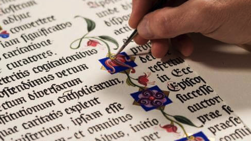Back then, decorating the empty spaces between the paragraphs or the images was something very common. Obviously, we are not talking about the well-known horror vacui, but the presence of images enriching the text was something very important though.
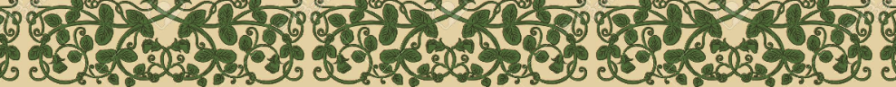As regards the supporting material of the writing, we chose to use a background that looked like the parchment paper that was used around the Middle Ages. Parchment itself was a very expensive writing support, and it could be affoard by very wealthy people only. As a matter of fact, only very important pieces of writing used to be written and conserved.
As far as the font-family is concerned, we chose one that could look like a handwritten style, with rounded letters and small decorations. We also tried to emphasize the importance of the first letter of each paragraph, which deserved incredible attention in the past. As a matter of fact, illuminations were real masterpieces and miniaturists could spend months decorating a single letter.
While creating this style, we took into consideration all these features, and we tried to mimic as much as we could a style where drawings and good-looking characters were as much important as the proper content of the text.
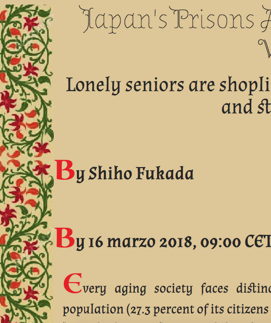Despite the fact that in this century book production increased enormously, scientists and men of letters still were publishing their works in the form of manuscript. The rise of the print and publishing industry were still in need of more advertisement.
In any case, in the XIX century, the printing process was constantly developing and making progress thanks to the revolutionary invention of the printing press and to the invention of the steam powered press, which dates back to 1812. Indeed, the powered press made it possible to print over a thousand copies of a page per hour.
Furthermore, the most recent technological discoverings allowed the creation of a printing press that could print on both sides of a sheet at once, making the printing process extremely faster and making newspapers available to a mass audience (which also helped spread literacy).
The result of this influent change could be seen even in book and printing works' design, with a consequent standardization in titles and other metadata.
As far as the newspapers were concerned, people considered having big titles written in different fonts as something very fancy and attractive. As a matter of fact, the newspapers that date back to the XIX century are usually characterized by such features. Also, something that was very appreciated concerned elaborated decorations in the headers and lines dividing the paragraphs.
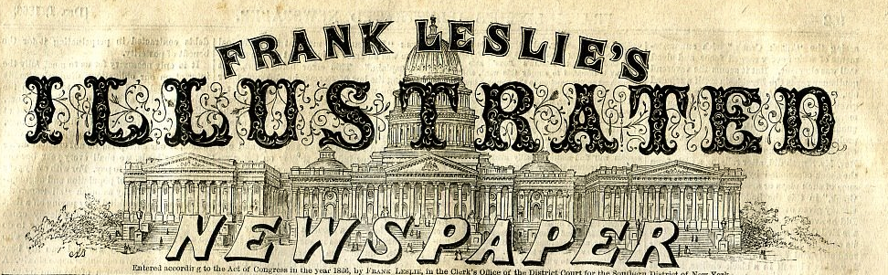Back then, titles had a huge importance and they used to occupy a relevant section of the page.
The colors in the printing had not been introduced yet, therefore all the images were and are in black-and-white. If something was colored, it was done manually and after having printed the work.
By doing research, we found out something else that got our attention; in the XIX century, ads were already present in the newspapers and they used to advertize popular products that rich people, namely, those who could afford to buy newspapers, would be interested in. Therefore, we decided the add even a small ads advertizing the revolutionary drinking of the chocolate in our style.
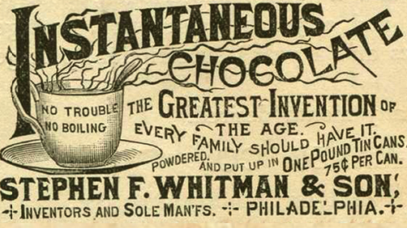We took into consideration all these features and we created a template to summarize them:
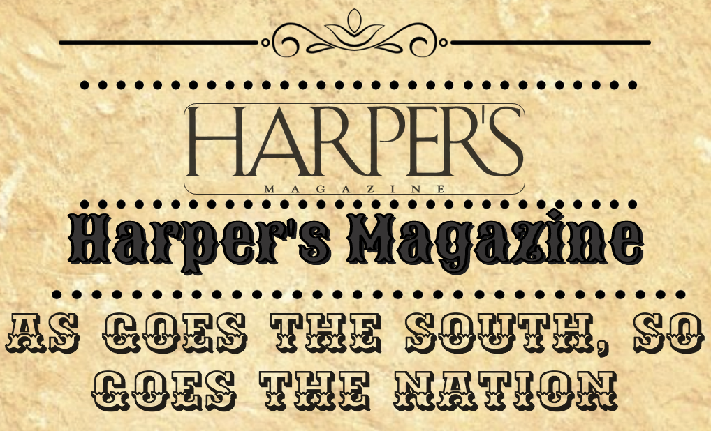Despite the fact that futurism and dadaism were leading the beginning of the XX Century, many newspapers maintained a very serious and professional layout, even though they were living in an atmosphere of complete change and excitement.
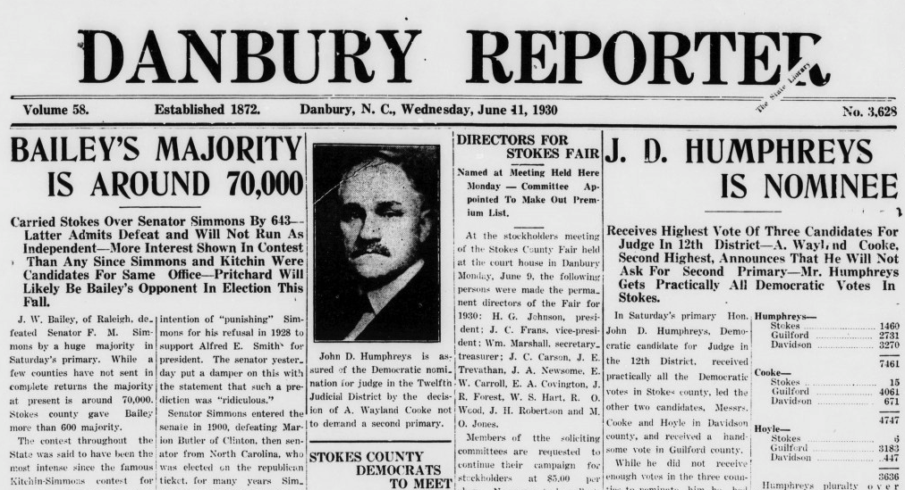In the newspapers that were commonly sold at the beginning of the XX Century, the text was divided into columns where words used to be very close each other, and images did not seem to have the same importance as in the previous centuries. The main aim of the newspapers populating this historical period was the clarity, therefore the titles and the fonts were not extremely detailed as formerly, and the biggest concern was related to the easy understandability of the written content.
The font-family that we used here is a very serious and professional one, written in italics and aimed at assisting a fast-reading style. As a matter of fact, writing the news in very narrow columns is a way to help people to read faster, given that the newspaper of this period were not read from the beginning to the end by their readers, who simply wanted to grasp a piece of information here and a piece of information there.
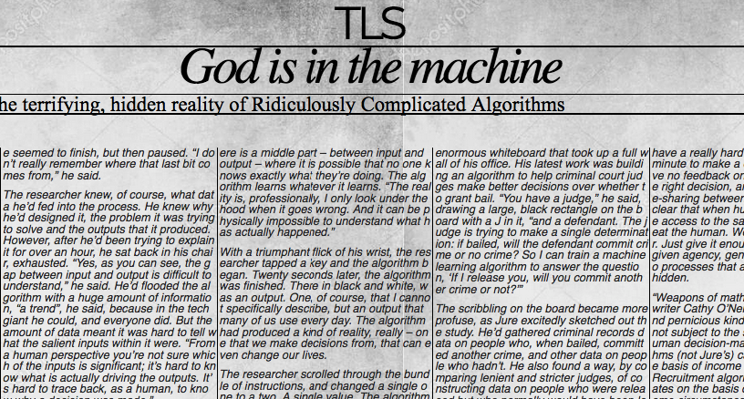Differently than the previous decades, the magazines of the XX century were characterized by the invasive presence of colors. We are in the post-war period. The dominating culture was the one that was led and promoted by the hippies. Everything, as a consequence, had to be very colorful and attractive. The main aim was spreading an idea of peace and harmony that was transmitted by using a huge amount of colors and putting them together, even when it appeared to go against every rule concerning the harmonious combination of colors.
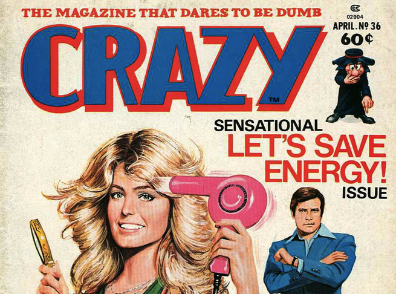The font that we used for the main corpus of the text looks like a joke. Some letters are in bold, others are not. There is not a common shape and a style which is followed, but we deceided to chose this kind of font because, in our opinion, it was the one which could express in the best way the carefreeness that characterized this historical period.
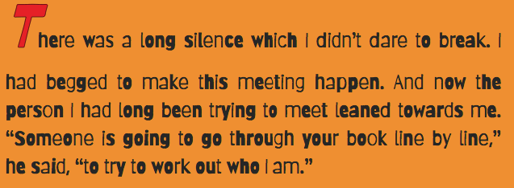Even the headers and the titles deserved a particular attention: we used big letters with inner decorations in order to get people's attention. Additionaly, we decided to use an animated and colorful bacgkround in a global structure able to transmit this idea of frenzy and excitement.
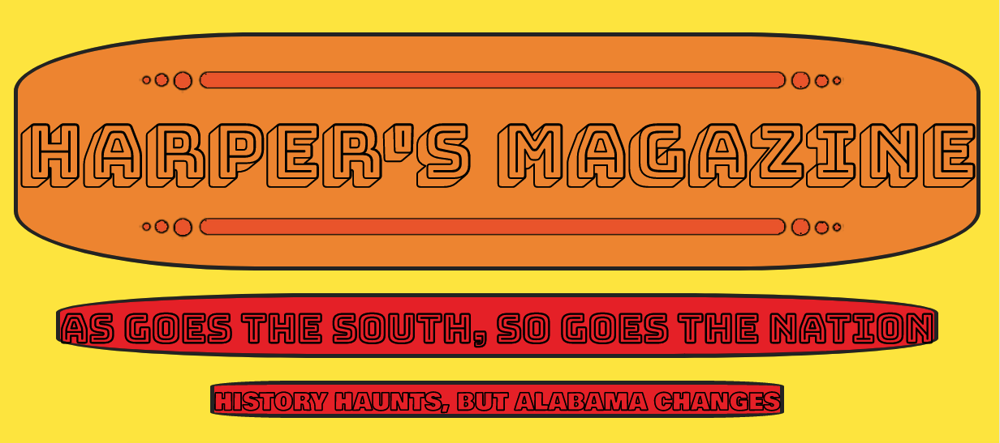This style is based on magazines belonging to the end of the XX Century. These magazines presented big images and big titles on the main cover page. The titles were always colored with bright and cheerful colours that could get people's attention.
Pages used to be of a smooth, polished, shiny white. The font-family doesn't present aggressive edges, but a rounded way that makes the reader feel in an age without concerns.
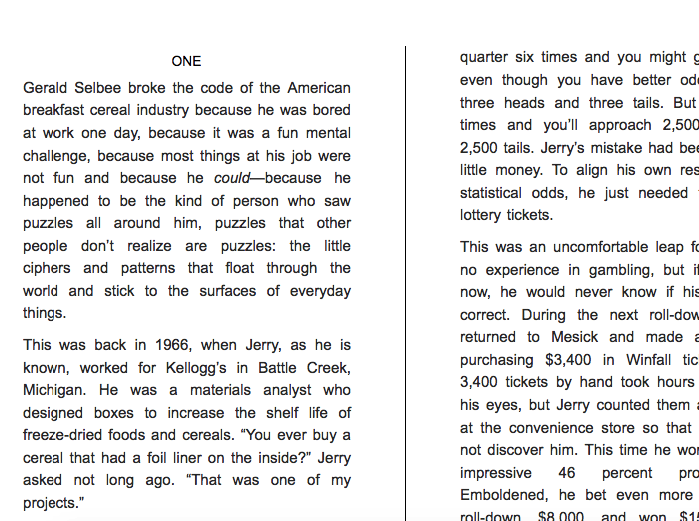We imagined a future we would not like to see. We guessed that people will get bored of reading, and visual content will be the most spread way to communicate news. Therefore, we created a kind of video-reader which will read the text and display the images related to the news. In this way, people of the future will have the opportunity to listen to the news while doing other things.
In the future, time will be even more important than today. Consequently, in our style it will even be possible to speed up the reading voice, so as to listen to the same content in a fastest way.
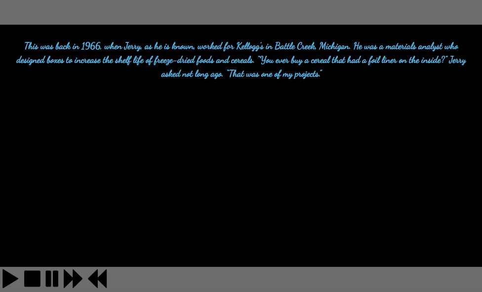